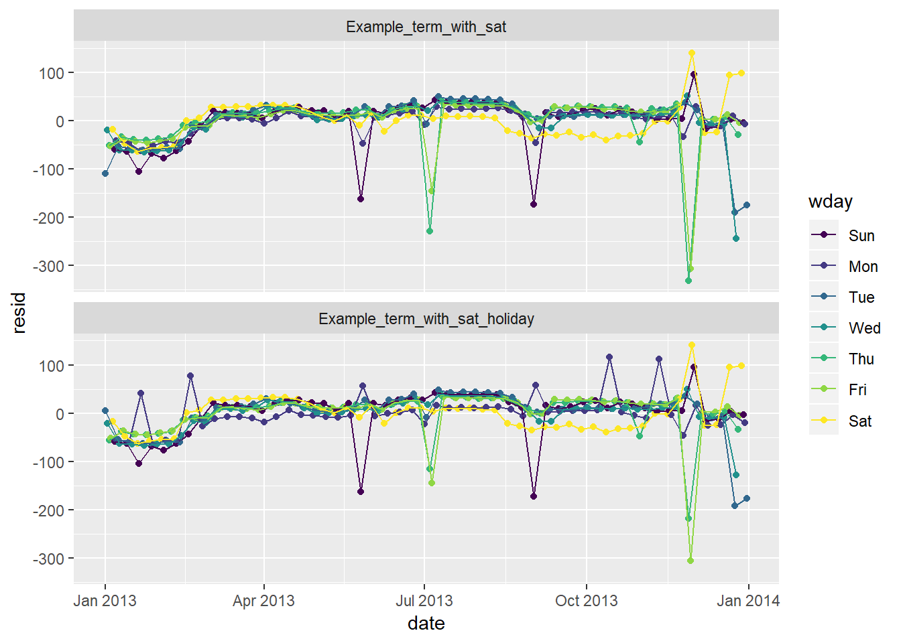
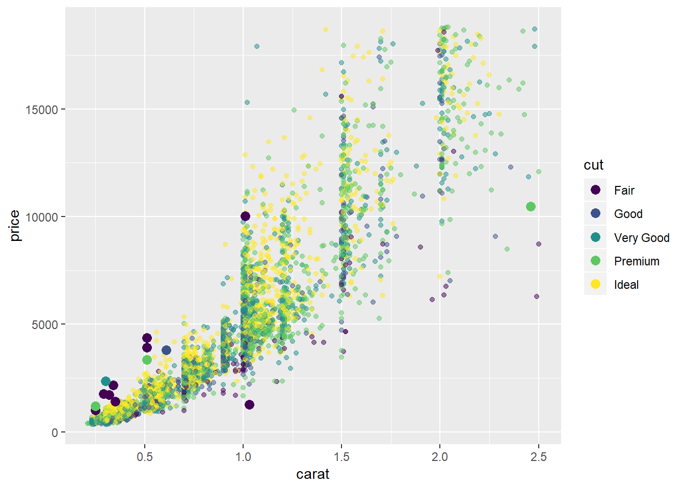
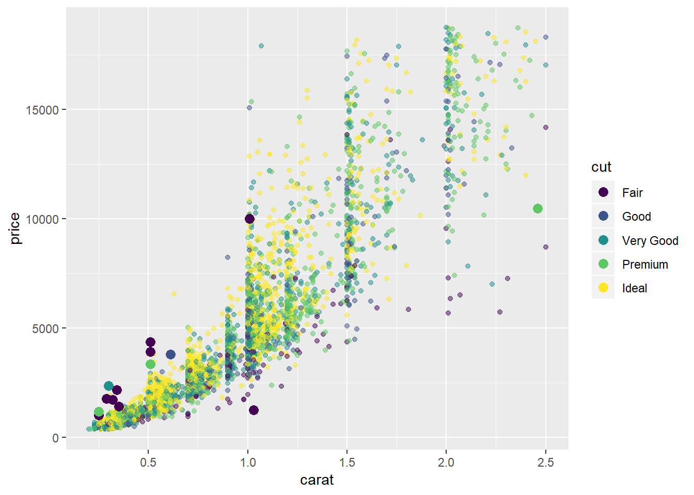
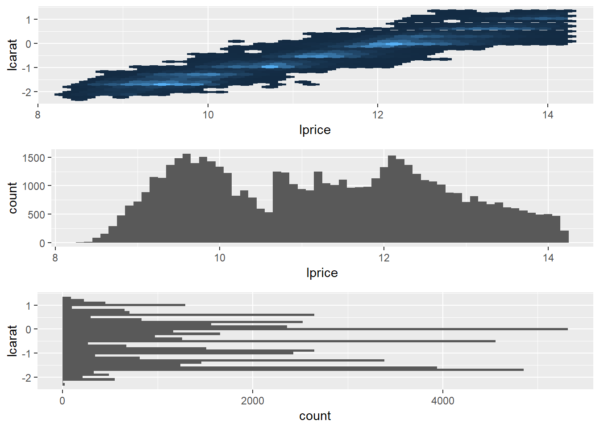
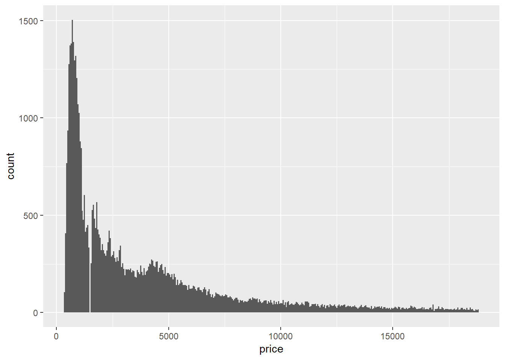

Ch. 24: Model building
Key questions:
- 24.2.3. #1, 2, 4
data_grid, argument:.model: if the model needs variables that haven’t been supplied explicitly, will auto-fill them with “typical” values; continuous –> median; categorical –> modeMASS:rlmrobust linear model that uses “M estimation by default”- warning: MASS::select will clash with dplyr::select, so I usually won’t load in MASS explicitly
24.2: Why are low quality diamonds more expensive?
# model for only small diamonds
diamonds2 <- diamonds %>%
filter(carat <= 2.5) %>%
mutate(lprice = log2(price),
lcarat = log2(carat))
mod_diamond <- lm(lprice ~ lcarat, data = diamonds2)
mod_diamond2 <- lm(lprice ~ lcarat + color + cut + clarity, data = diamonds2)
diamonds2 <- diamonds2 %>%
add_residuals(mod_diamond2, "resid_lg")24.2.3
In the plot of
lcaratvs.lprice, there are some bright vertical strips. What do they represent?plot_lc_lp <- diamonds2 %>% ggplot(aes(lcarat, lprice))+ geom_hex(show.legend = FALSE) plot_lp_lc <- diamonds2 %>% ggplot(aes(lprice, lcarat))+ geom_hex(show.legend = FALSE) plot_lp <- diamonds2 %>% ggplot(aes(lprice))+ geom_histogram(binwidth = .1) plot_lc <- diamonds2 %>% ggplot(aes(lcarat))+ geom_histogram(binwidth = 0.1) gridExtra::grid.arrange(plot_lc_lp, plot_lc, plot_lp + coord_flip())
- The vertical bands correspond with clumps of
carat_lgvalues falling across a range ofprice_lgvalues
Histogram of
caratvalues:diamonds2 %>% ggplot(aes(carat))+ geom_histogram(binwidth = 0.01)+ scale_x_continuous(breaks = seq(0, 2, 0.1))
- The chart above shows spikes in carat values at 0.3, 0.4, 0.41, 0.5, 0.7, 0.9, 1.0, 1.01, 1.2, 1.5, 1.7 and 2.0, each distribution spikes at that value and then decreases until hitting the next spike
- This suggests there is a preference for round numbers ending on tenths
- It’s curious why you don’t see really see spikes at 0.6, 0.8, 0.9, 1.1, 1.3, 1.4, 1.6, 1.8, 1.9, it suggests either there is something special about those paricular values – perhaps diamonds just tend to develop near those sizes so are more available in sizes of 0.7 than say 0.8
- this article also found similar spikes: https://www.diamdb.com/carat-weight-vs-face-up-size/ as did this: https://www.pricescope.com/wiki/diamonds/diamond-carat-weight , which use different data sets (though they do not explain the spike at 0.9 but no spike at 1.4)
- The vertical bands correspond with clumps of
If
log(price) = a_0 + a_1 * log(carat), what does that say about the relationship betweenpriceandcarat?- because we’re using a natural log it means that an a_1 percentage change in carat corresponds with an a_1 percentage increase in the price
- if you had used a log base 2 it has a different interpretation that can be thought of in terms of relationship of doubling
Extract the diamonds that have very high and very low residuals. Is there anything unusual about these diamonds? Are they particularly bad or good, or do you think these are pricing errors?
extreme_vals <- diamonds2 %>% mutate(extreme_value = (abs(resid_lg) > 1)) %>% filter(extreme_value) %>% add_predictions(mod_diamond2, "pred_lg") %>% mutate(price_pred = 2^(pred_lg)) #graph extreme points as well as line of pred diamonds2 %>% add_predictions(mod_diamond2) %>% # mutate(extreme_value = (abs(resid_lg) > 1)) %>% # filter(!extreme_value) %>% ggplot(aes(carat, price))+ geom_hex(bins = 50)+ geom_point(aes(carat, price), data = extreme_vals, color = "orange")
- It’s possible some of these these were mislabeled or errors, e.g. an error in typing e.g. 200 miswritten as 2000, though given the wide range in pricing this does not seem like that extreme of a variation.
diamonds2 %>% add_predictions(mod_diamond2) %>% mutate(extreme_value = (abs(resid_lg) > 1), price_pred = 2^pred) %>% filter(extreme_value) %>% mutate(multiple = price / price_pred) %>% arrange(desc(multiple)) %>% select(price, price_pred, multiple)## # A tibble: 16 x 3 ## price price_pred multiple ## <int> <dbl> <dbl> ## 1 2160 314. 6.88 ## 2 1776 412. 4.31 ## 3 1186 284. 4.17 ## 4 1186 284. 4.17 ## 5 1013 264. 3.83 ## 6 2366 774. 3.05 ## 7 1715 576. 2.98 ## 8 4368 1705. 2.56 ## 9 10011 4048. 2.47 ## 10 3807 1540. 2.47 ## 11 3360 1373. 2.45 ## 12 3920 1705. 2.30 ## 13 1415 639. 2.21 ## 14 1415 639. 2.21 ## 15 1262 2644. 0.477 ## 16 10470 23622. 0.443- If the mislabeling were an issue of e.g. 200 to 2000, you would expect that some of the actual values were ~1/10th or 10x the value of the predicted value. Though none of them appear to have this issue, except for maybe the item that was priced at 2160 but has a price of 314, which is the closest error where the actual value was ~1/10th the value of the prediction
Does the final model,
mod_diamonds2, do a good job of predicting diamond prices? Would you trust it to tell you how much to spend if you were buying a diamond?perc_unexplained <- diamonds2 %>% add_predictions(mod_diamond2, "pred") %>% mutate(pred_2 = 2^pred, mean_price = mean(price), error_deviation = (price - pred_2)^2, reg_deviation = (pred_2 - mean_price)^2, tot_deviation = (price - mean_price)^2) %>% summarise(R_squared = sum(error_deviation) / sum(tot_deviation)) %>% flatten_dbl() 1 - perc_unexplained## [1] 0.9653255- ~96.5% of variance is explained by model which seems pretty solid, though is relative to each situation
- See 24.2.3.3 for other considerations, though even this is very incomplete. Would want to check a variety of other metrics to further evaluate trust.
24.3 What affects the number of daily flights?
Some useful notes copied from this section:
daily <- flights %>%
mutate(date = make_date(year, month, day)) %>%
count(date)
daily <- daily %>%
mutate(month = month(date, label = TRUE))
daily <- daily %>%
mutate(wday = wday(date, label = TRUE))
term <- function(date) {
cut(date,
breaks = ymd(20130101, 20130605, 20130825, 20140101),
labels = c("spring", "summer", "fall")
)
}
daily <- daily %>%
mutate(term = term(date))
daily %>%
filter(wday == "Sat") %>%
ggplot(aes(date, n, colour = term))+
geom_point(alpha = .3)+
geom_line()+
scale_x_date(NULL, date_breaks = "1 month", date_labels = "%b")
24.3.5
Use your Google sleuthing skills to brainstorm why there were fewer than expected flights on Jan 20, May 26, and Sep 1. (Hint: they all have the same explanation.) How would these days generalise to another year?
- January 20th was the day for MLK day41
- May 26th was the day before Memorial Day weekend
- September 1st was the day before labor day
Based on the above, it seems a variable representing “holiday” or “holiday weekend” may be valuable.
What do the three days with high positive residuals represent? How would these days generalise to another year?
daily <- flights %>% mutate(date = make_date(year, month, day)) %>% count(date) daily <- daily %>% mutate(wday = wday(date, label = TRUE))mod <- lm(n ~ wday, data = daily) daily <- daily %>% add_residuals(mod) daily %>% top_n(3, resid)## # A tibble: 3 x 4 ## date n wday resid ## <date> <int> <ord> <dbl> ## 1 2013-11-30 857 Sat 112. ## 2 2013-12-01 987 Sun 95.5 ## 3 2013-12-28 814 Sat 69.4- these days correspond with the Saturday and Sunday of Thanksgiving, as well as the Saturday after Christmas
- these days can fall on different days of the week each year so would vary from year to year depending on which day they fell on
- ideally you would include some “holiday” variable to help capture the impact of these / better generalise between years
Check the absolute values
daily %>% top_n(3, abs(resid))## # A tibble: 3 x 4 ## date n wday resid ## <date> <int> <ord> <dbl> ## 1 2013-11-28 634 Thu -332. ## 2 2013-11-29 661 Fri -306. ## 3 2013-12-25 719 Wed -244.- The days with the greatest magnitude for residuals were on Christmast Day, Thanksgiving Day, and the day after Thanksgiving
Create a new variable that splits the
wdayvariable into terms, but only for Saturdays, i.e. it should haveThurs,Fri, butSat-summer,Sat-spring,Sat-fall. How does this model compare with the model with every combination ofwdayandterm?term <- function(date) { cut(date, breaks = ymd(20130101, 20130605, 20130825, 20140101), labels = c("spring", "summer", "fall") ) } daily <- daily %>% mutate(term = term(date)) # example with wday_mod Example_term_with_sat <- daily %>% mutate(wday_mod = ifelse(wday == "Sat", paste(wday, "_", term), wday)) %>% lm(n ~ wday_mod, data = .) # just wday wkday <- daily %>% lm(n ~ wday, data = .) # wday and term, no interaction... wkday_term <- daily %>% mutate(wday_mod = ifelse(wday == "Sat", paste(wday, "_", term), wday)) %>% lm(n ~ wday + term, data = .) # wday and term, interaction wkday_term_interaction <- daily %>% mutate(wday_mod = ifelse(wday == "Sat", paste(wday, "_", term), wday)) %>% lm(n ~ wday*term, data = .) daily %>% mutate(wday_mod = ifelse(wday == "Sat", paste(wday, "_", term), wday)) %>% gather_predictions(Example_term_with_sat, wkday, wkday_term, wkday_term_interaction) %>% ggplot(aes(date, pred, colour = wday))+ geom_point()+ geom_line()+ facet_wrap(~model, ncol = 1)
- In the example, saturday has different predicted number of flights in the summer
- when just including
wkdayyou don’t see this differentiation - when including
wkdayandtermyou see differentiation in the summer, though this difference is the same across allwdays, hence the increased number for Saturday’s is less than it shows-up as as compared to either the example (where the term is only interacted with for Saturday) or thewkday_term_interactionchart where the interaciton is allowed for each day of the week - you see increases in flights across pretty much all
wdays in summer, though you see the biggest difference in Saturday42
- when just including
Residuals of these models
daily %>% mutate(wday_mod = ifelse(wday == "Sat", paste(wday, "_", term), wday)) %>% gather_residuals(Example_term_with_sat, wkday, wkday_term, wkday_term_interaction) %>% ggplot(aes(date, resid, colour = wday))+ geom_point()+ geom_line()+ facet_wrap(~model, ncol = 1)
- The graphs with saturday term and interaction across terms do not show gross changes in residuals varying by season the way the models that included just weekday or weekday and term without an interaction do.
- note that you have a few days with large negative residuals43
- these likely correspond with holidays
- In the example, saturday has different predicted number of flights in the summer
Create a new
wdayvariable that combines the day of week, term (for Saturdays), and public holidays. What do the residuals of that model look like?Create dataset of federal holidays
# holiday's that could have been added: Easter, black friday # consider adding a filter to remove Columbus day and perhaps Veteran's day holidays <- tribble( ~HolidayName, ~HolidayDate, "New Year's", "2013-01-01", "MLK", "2013-01-21", "President's Day", "2013-02-18", "Memorial Day", "2013-05-27", "Independene Day", "2013-07-04", "Labor Day", "2013-09-02", "Columbus Day", "2013-10-14", "Veteran's Day", "2013-11-11", "Thanksgiving", "2013-11-28", "Christmas Day", "2013-12-25" ) %>% mutate(HolidayDate = ymd(HolidayDate))Create model with Holiday variable
Example_term_with_sat_holiday <- daily %>% mutate(wday_mod = ifelse(wday == "Sat", paste(wday, "_", term), wday)) %>% left_join(holidays, by = c("date" = "HolidayDate")) %>% mutate(Holiday = !is.na(HolidayName)) %>% lm(n ~ wday_mod + Holiday, data = .)Look at residuals of model
daily %>% mutate(wday_mod = ifelse(wday == "Sat", paste(wday, "_", term), wday)) %>% left_join(holidays, by = c("date" = "HolidayDate")) %>% mutate(Holiday = !is.na(HolidayName)) %>% gather_residuals(Example_term_with_sat_holiday, Example_term_with_sat) %>% ggplot(aes(date, resid, colour = wday))+ geom_point()+ geom_line()+ facet_wrap(~model, ncol = 1)
- Notice the residuals for day’s like July 4th and Christas are closer to 0 now, though residuals for smaller holidays like MLK, President’s, Columbus, and Veteran’s Day are now positive when before they did not have such noticable abberations
- Suggests that just “holiday” is not enough to capture the relationship
- In 24.3.5.4 I show how to create a “near holiday” variable (though I do not add any new analysis after creating this)
What happens if you fit a day of week effect that varies by month (i.e.
n ~ wday * month)? Why is this not very helpful?Create model
week_month <- daily %>% mutate(month = month(date) %>% as.factor()) %>% lm(n ~ wday * month, data = .)Graph predictions (with
n ~ wday * termas the comparison)daily %>% mutate(month = month(date) %>% as.factor()) %>% gather_predictions(wkday_term_interaction, week_month) %>% ggplot(aes(date, pred, colour = wday))+ geom_point()+ geom_line()+ facet_wrap(~model, ncol = 1)
- This model has the most flexibility / inputs, though this makes the pattern harder to follow / interpret
- Certain decreases in the month to month model are difficult to explain, for example the decrease in the month of May
Graph residuals (with
n ~ wday * termas the comparison)daily %>% mutate(month = month(date) %>% as.factor()) %>% gather_residuals(wkday_term_interaction, week_month) %>% ggplot(aes(date, resid, colour = wday))+ geom_point()+ geom_line()+ facet_wrap(~model, ncol = 1)
The residuals seem to partially explain some of these inexplicable ups / downs:
- For the model that incorporates an interaciton with month, you see the residuals in months with a holiday tend to cause the associated day of the week the holiday fell on to then have high residuals on the non-holiday days, an effect thta is less pronounced on the models interacted with
term44- The reason for this is that for the monthly variables there are only 4-5 week days in each month, so a holiday on one of these can substantially impact the expected number of flights on the weekend in that month (i.e. the prediction is based just on 4-5 observations). For the term interaction you have more like 12 observations to get an expected value, so while there is still an aberration on that day, the other days predictions are less affected
What would you expect the model
n ~ wday + ns(date, 5)to look like? Knowing what you know about the data, why would you expect it to be not particularly effective?I would expect to see a similar overall pattern, but with more smoothed affects. Let’s check what these actually look like below.
wkday_term_ns <- daily %>% mutate(wday_mod = ifelse(wday == "Sat", paste(wday, "_", term), wday)) %>% lm(n ~ wday + splines::ns(date, 5), data = .) wkday_term_interaction_ns <- lm(n ~ wday * splines::ns(date, 5), data = daily)Look at predictions (light grey are actuals)
daily %>% mutate(wday_mod = ifelse(wday == "Sat", paste(wday, "_", term), wday)) %>% gather_predictions(wkday_term_ns, wkday_term_interaction_ns) %>% ggplot(aes(date, pred, colour = wday))+ geom_point()+ geom_line(aes(x = date, y = n, group = wday), colour = "grey", alpha = 0.5)+ geom_line()+ facet_wrap(~model, ncol = 1)
Look at residuals (in light grey are actuals)
daily %>% mutate(wday_mod = ifelse(wday == "Sat", paste(wday, "_", term), wday)) %>% gather_residuals(wkday_term_ns, wkday_term_interaction_ns) %>% ggplot(aes(date, resid, colour = wday))+ geom_point()+ geom_line(aes(x = date, y = n, group = wday), colour = "grey", alpha = 0.5)+ geom_line()+ facet_wrap(~model, ncol = 1)
We hypothesised that people leaving on Sundays are more likely to be business travellers who need to be somewhere on Monday. Explore that hypothesis by seeing how it breaks down based on distance and time: if it’s true, you’d expect to see more Sunday evening flights to places that are far away.
flights %>% mutate(date = lubridate::make_date(year, month, day), wday = wday(date, label = TRUE)) %>% select(date, wday, distance) %>% filter(distance < 3000) %>% ggplot(aes(wday, distance))+ geom_boxplot()
- 25th and 75th percentiles aren’t visibly different, but median is a little higher
- the same is the case for Saturday travel which does not seem to fit into this hypothesis as neatly. The effect seems more general to the weekend than just Saturday, and there seem like there may be other potential explanations than “business travel”
It’s a little frustrating that Sunday and Saturday are on separate ends of the plot. Write a small function to set the levels of the factor so that the week starts on Monday.
wday_modified <- function(date){ date_order <- (wday(date) + 5) %% 7 date <- wday(date, label = TRUE) %>% fct_reorder(date_order) date } flights %>% mutate(date = lubridate::make_date(year, month, day), wday = wday_modified(date)) %>% select(date, wday, distance) %>% filter(distance < 3000) %>% ggplot(aes(wday, distance))+ geom_boxplot()
Appendix
24.2.3.3
Plots of extreme values against a sample and colored by some of the key attributes
Plots of extreme values against carat, price, clarity
diamonds2 %>%
add_predictions(mod_diamond2) %>%
sample_n(5000) %>%
ggplot(aes(carat, price))+
geom_point(aes(carat, price, colour = clarity), alpha = 0.5)+
geom_point(aes(carat, price, colour = clarity), data = extreme_vals, size = 3)
Plots of extreme values against carat, price, cut
diamonds2 %>%
add_predictions(mod_diamond2) %>%
sample_n(5000) %>%
ggplot(aes(carat, price))+
# geom_hex(bins = 50)+
geom_point(aes(carat, price, colour = cut), alpha = 0.5)+
geom_point(aes(carat, price, colour = cut), data = extreme_vals, size = 3)
24.2.3.1
Visualization with horizontal stripes and lprice as the focus
# horizontal stripes
gridExtra::grid.arrange(plot_lp_lc, plot_lp, plot_lc + coord_flip()) 
- same thing, just change orientation and highlight
lpricewith a histogram
A few other graphs from this problem
diamonds2 %>%
ggplot(aes(price))+
geom_histogram(binwidth = 50)
diamonds2 %>%
ggplot(aes(carat))+
geom_histogram(binwidth = 0.01)
Taking the log of price seems to have a bigger impact on the shape of the geom_hex graph
diamonds2 %>%
ggplot(aes(carat, lprice))+
geom_hex(show.legend = FALSE)
diamonds2 %>%
ggplot(aes(lcarat, price))+
geom_hex(show.legend = FALSE)
24.3.5.4
In this section I create a marker for days that are “near a holiday”
near_holidays <- holidays %>%
# This creates a series of helper variables to create the variable 'Holiday_IntervalDay' that represents an interval that encloses the period between the holiday and the beginning or end of the most recent weekend
mutate(HolidayWday = wday(HolidayDate, label = TRUE),
HolidayWknd = lubridate::round_date(HolidayDate, unit = "week"),
HolidayFloor = lubridate::floor_date(HolidayDate, unit = "week"),
HolidayCeiling = lubridate::ceiling_date(HolidayDate, unit = "week"),
Holiday_IntervalDay = case_when(HolidayWknd == HolidayFloor ~ (HolidayFloor - ddays(2)),
TRUE ~ HolidayCeiling)) %>%
mutate(Holiday_Period = interval(pmin(HolidayDate, Holiday_IntervalDay), pmax(HolidayDate, Holiday_IntervalDay)))
# This returns each day and whether it occurred near a holiday
near_holiday <- map(near_holidays$Holiday_Period, ~(seq.Date(ymd("2013-01-01"), ymd("2013-12-31"), by = "day") %within% .x)) %>%
transpose() %>%
map_lgl(any) %>%
as_tibble() %>%
rename(NearHoliday = value) %>%
mutate(date = seq.Date(ymd("2013-01-01"), ymd("2013-12-31"), by = "day"))
near_holiday## # A tibble: 365 x 2
## NearHoliday date
## <lgl> <date>
## 1 TRUE 2013-01-01
## 2 FALSE 2013-01-02
## 3 FALSE 2013-01-03
## 4 FALSE 2013-01-04
## 5 FALSE 2013-01-05
## 6 FALSE 2013-01-06
## 7 FALSE 2013-01-07
## 8 FALSE 2013-01-08
## 9 FALSE 2013-01-09
## 10 FALSE 2013-01-10
## # ... with 355 more rows- I ended-up not adding any additional analysis here, though the methodology for creating the “near holiday” seemed worth saving
- Could come back to add more in the future
it was also the 2nd inauguration for Obama↩
Interactions facilitate encoding these types of conditional relationships, i.e. the impact of summer depends on the day of the week (/ vice versa)↩
Remember this corresponds with days where the predictions are higher than the actuals.↩
Balancing the right level of complexity of a model is generally referred to as the “bias variance tradeoff”.↩